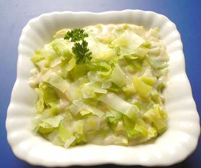

Lentil soup

Description
A traditional recipe for leek with cream.
Ingredients:
2 leeks
1 bouillon cube (with meat)
125g cream
Steps:
Chop the leeks
Sauté leek in a pan
Add bouillon cube and cream
Cook for about 10 minutes
Home